STORY
概要
『門 GATE』は、昭和の日本を思わせる地方都市を舞台にした一人称視点のレトロ近未来ホラーアクションアドベンチャーゲームです。
プレイヤーは素材を集めて武器や道具を開発しながら町を探索し、未来から現れたAI兵器や異形の存在に立ち向かいます。
どこか懐かしい昭和の風景と、不穏な近未来技術が混在する独特の世界観の中で、探索、戦闘、謎解きを通じて物語の真相へと迫っていきます。父親からの助言を受けながら探索を進め、やがて世界を揺るがす存在との戦いへと巻き込まれていく——。
RETRO NEAR-FUTURE HORROR ACTION ADVENTURE
昭和の空気が残る地方都市で、発明好きの少年は自らの手で武器を作り、
未来から来たAI兵器に立ち向かう。
STORY
『門 GATE』は、昭和の日本を思わせる地方都市を舞台にした一人称視点のレトロ近未来ホラーアクションアドベンチャーゲームです。
プレイヤーは素材を集めて武器や道具を開発しながら町を探索し、未来から現れたAI兵器や異形の存在に立ち向かいます。
どこか懐かしい昭和の風景と、不穏な近未来技術が混在する独特の世界観の中で、探索、戦闘、謎解きを通じて物語の真相へと迫っていきます。父親からの助言を受けながら探索を進め、やがて世界を揺るがす存在との戦いへと巻き込まれていく——。
FEATURES
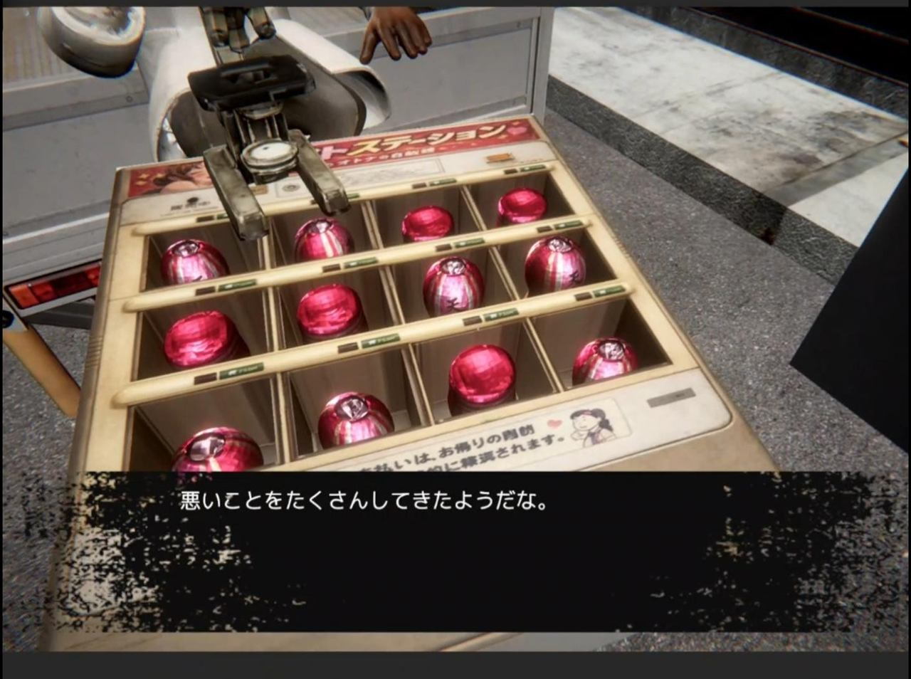
01
民家、スナック、アパートなど、昭和の地方都市をモチーフとしたマップを探索できます。懐かしさの中に違和感を感じさせる演出により、独特の不安感を生み出します。
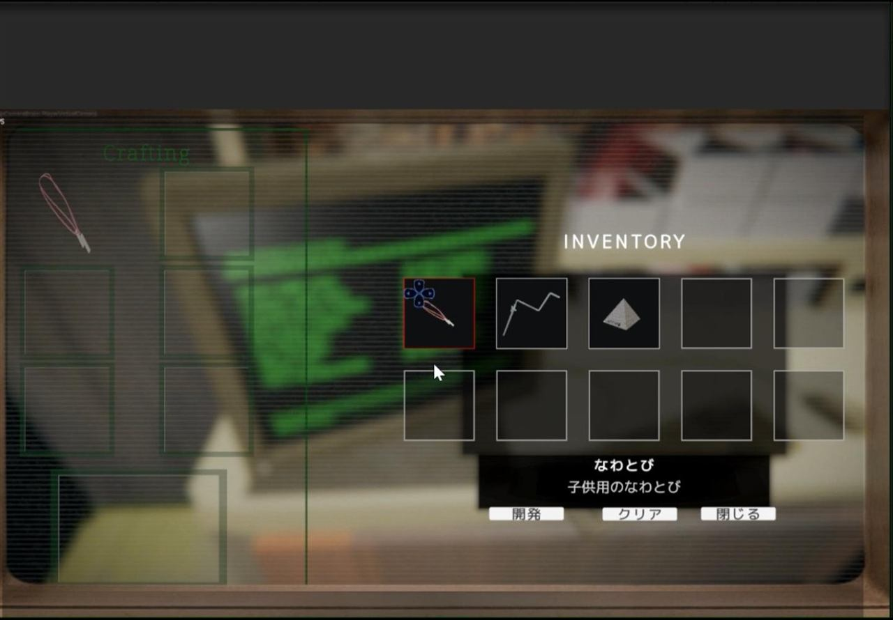
02
探索で集めた素材を利用して武器や道具を開発。町の各所に残された手がかりを集めながら、自らの力で道を切り開いていきます。
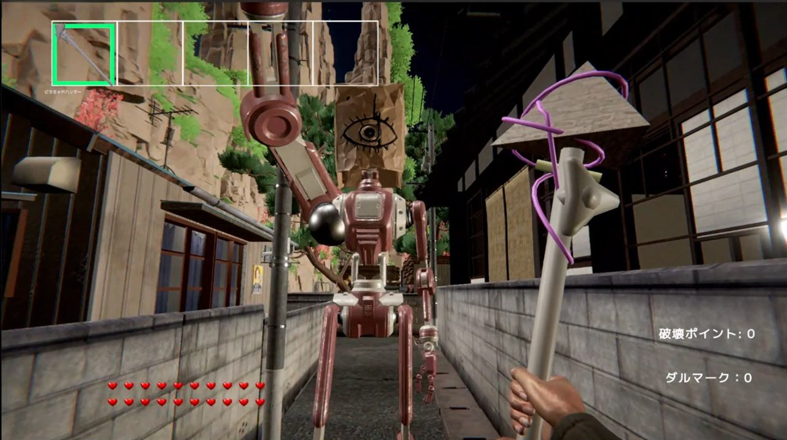
03
怪異だけではなく、未来から現れたAI兵器や異質な存在も登場。昭和レトロと近未来技術が交錯する独自の世界観を構築しています。
SCREENSHOTS
開発中の最新ビルドから。全て実際のゲーム画面です。
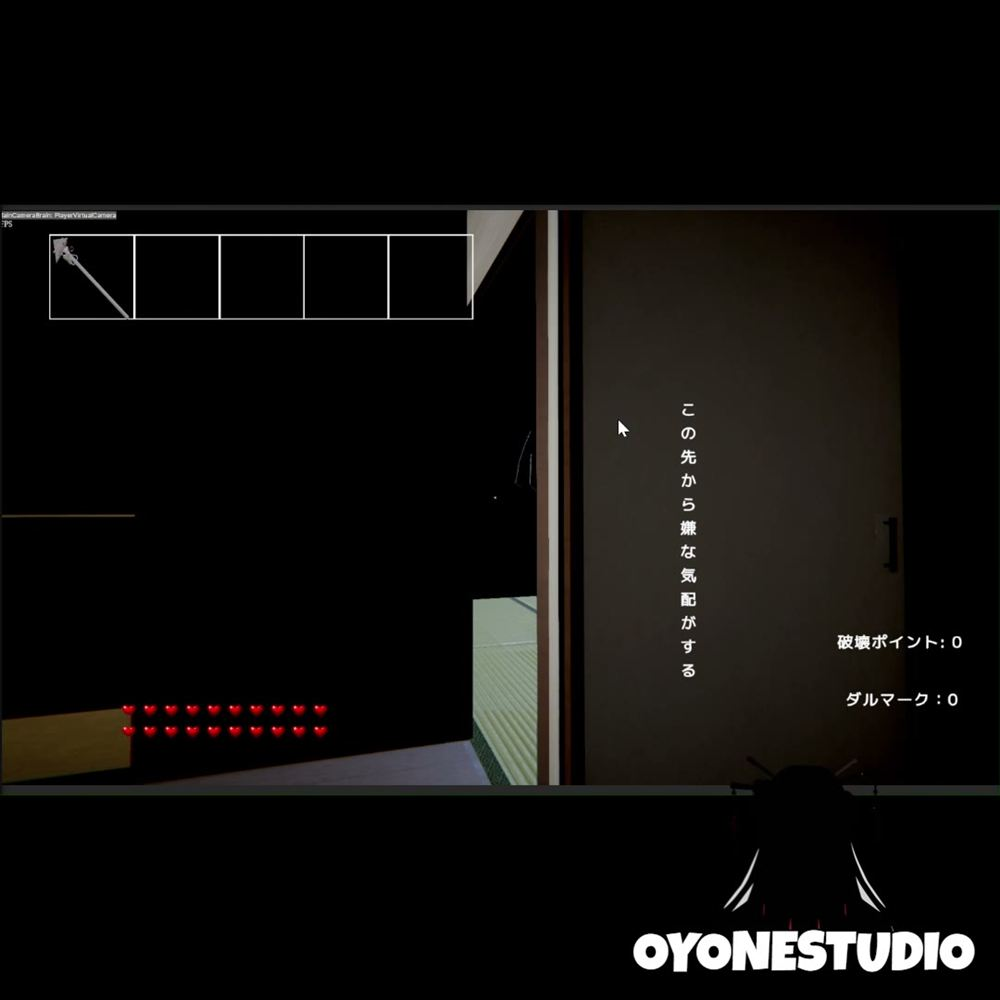
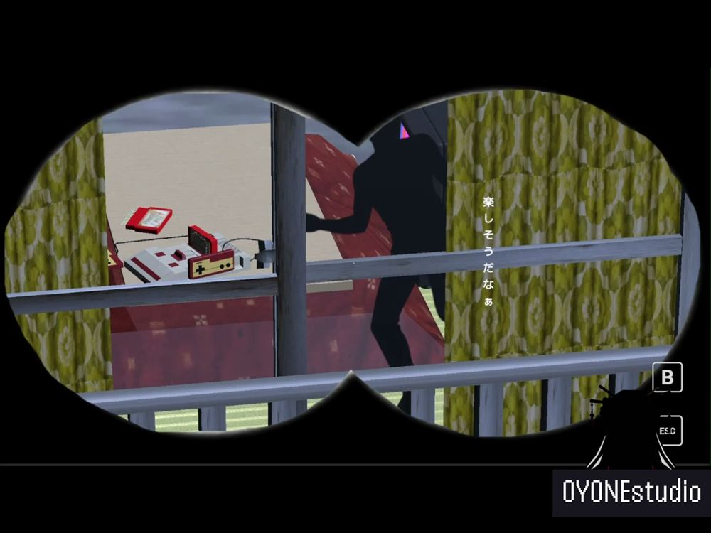
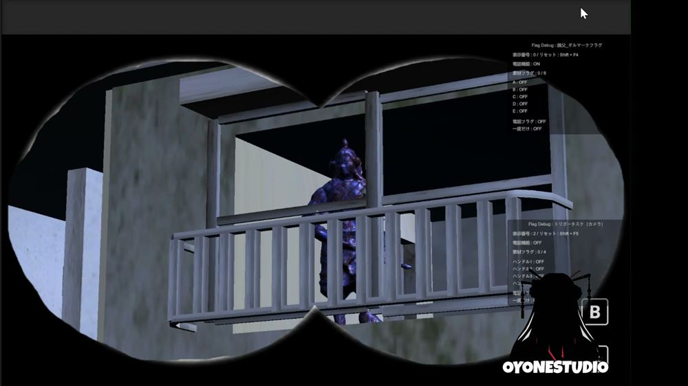
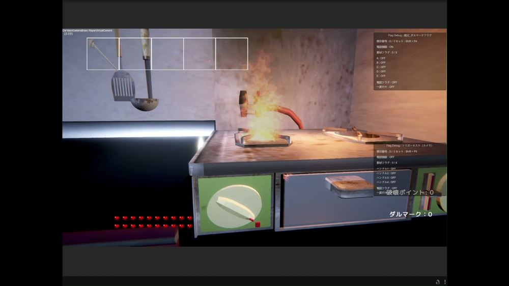
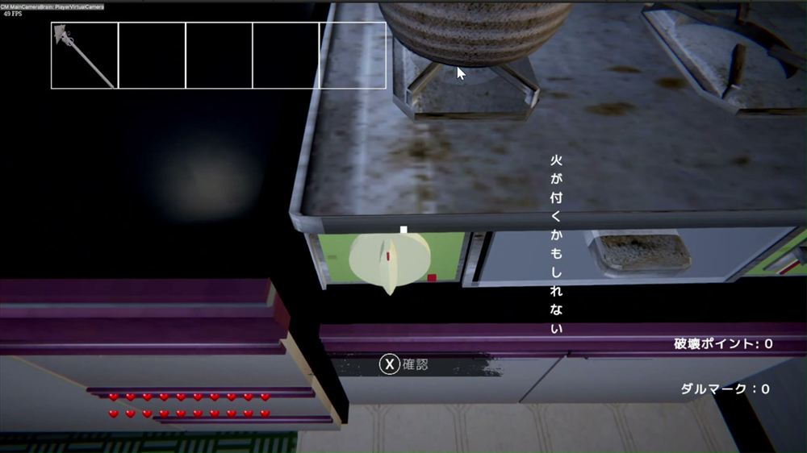
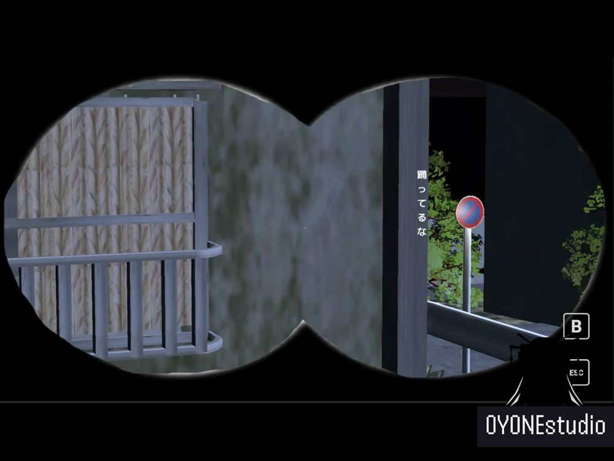
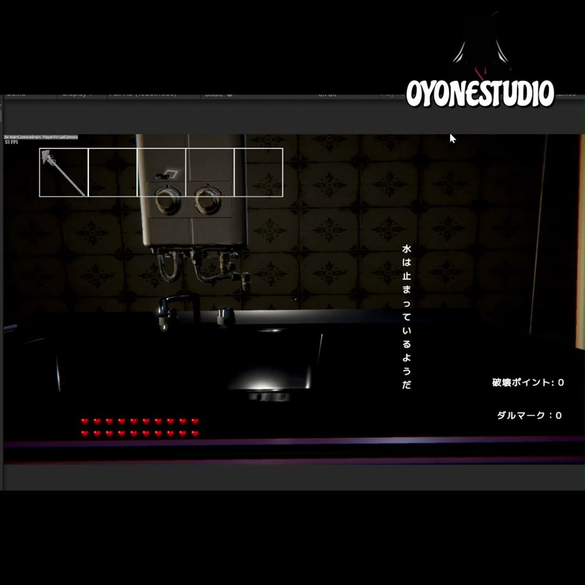
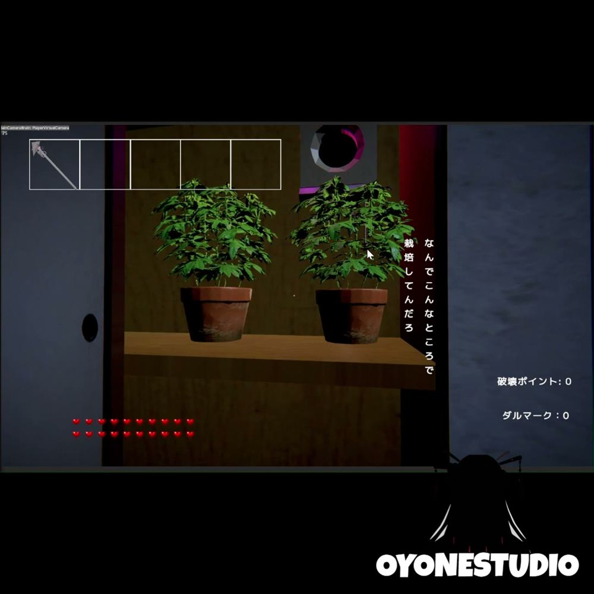
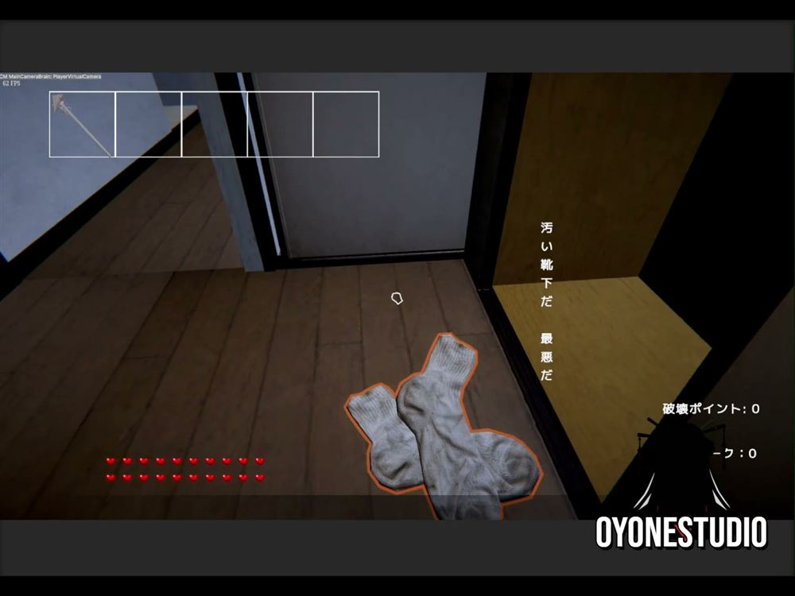
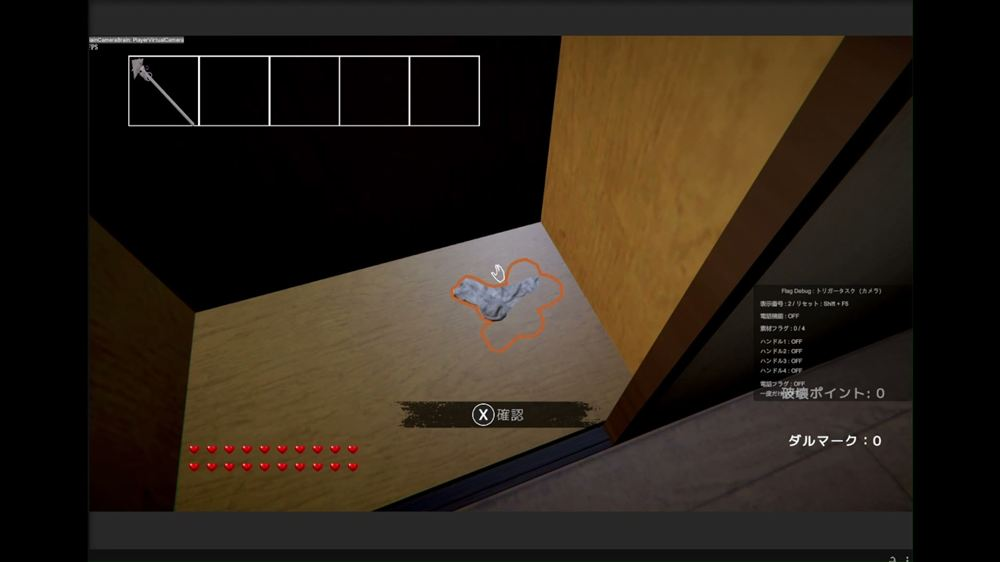
GAME INFO
| タイトル | 門 GATE |
|---|---|
| ジャンル | レトロ近未来ホラーアクションアドベンチャー |
| 開発 | OYONE studio |
| 販売プラットフォーム | Steam |
| 発売予定 | 2026年冬予定 |
| 価格 | 未定 |
| 対応言語 | 日本語、英語 |